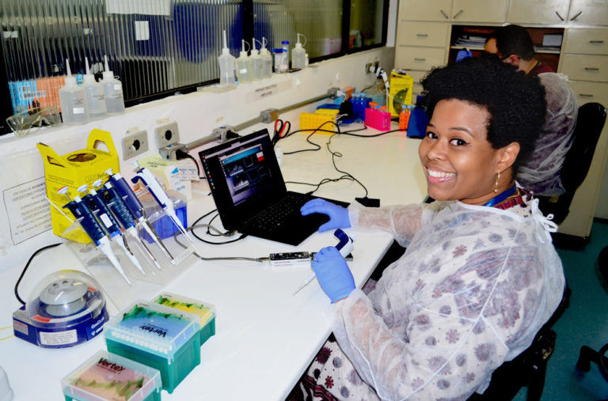

A cientista baiana que liderou o sequenciamento do genoma do coronavírus no Brasil em tempo recorde e abriu caminhos para mulheres negras na ciência.
“A ciência também é feita por mulheres negras.”

Dra. Jaqueline Goes de Jesus — Biomédica e PesquisadoraNascida em Salvador, Bahia, Jaqueline Goes de Jesus construiu uma carreira pautada pelo rigor científico e pelo compromisso com a saúde pública. Desde a graduação, destacou-se na investigação de arbovírus — como Zika, Dengue e Chikungunya — atuando diretamente na vigilância genômica no Brasil.
Seu trabalho une pesquisa de bancada de alta complexidade com impacto social imediato, tornando-a uma das principais referências da biomedicina contemporânea.
Início da trajetória científica com foco em análises clínicas e pesquisa laboratorial aplicada.
Aprofundamento em vigilância epidemiológica, biologia molecular e estudo de doenças infecciosas.
Especialização no sequenciamento genético de vírus emergentes e monitoramento de surtos no Brasil.
Atuação na linha de frente do projeto CADDE (Centro Conjunto Brasil-Reino Unido para Descoberta, Diagnóstico, Genômica e Epidemiologia de Arbovírus).
Em fevereiro de 2020, logo após a confirmação do primeiro caso de COVID-19 no Brasil, a equipe coordenada por Jaqueline na USP realizou um feito que entrou para a história da medicina.
Enquanto a média mundial naquele momento girava em torno de 15 dias, o genoma brasileiro foi decifrado em apenas dois dias.
O sequenciamento completo revelou a origem da linhagem do vírus que entrou no país, diferenciando mutações e rotas de transmissão.
Os dados foram compartilhados imediatamente com a comunidade internacional, auxiliando no desenvolvimento de testes diagnósticos e vacinas.
Em um cenário onde mulheres negras ainda representam uma pequena parcela dos pesquisadores líderes no Brasil, a projeção internacional de Jaqueline Goes transformou o imaginário coletivo sobre quem produz ciência de ponta no país.
“Existir também é resistir.”
Reconhecida internacionalmente — inclusive homenageada pela Mattel com uma boneca Barbie inspirada em sua trajetória dentro da linha Mulheres Inspiradoras — ela segue atuando como professora, pesquisadora e referência para novas gerações.
A ciência também é feita por mulheres negras. E nós não estamos apenas ocupando esses espaços, nós estamos transformando a forma como a ciência é feita no Brasil.
Sobre representatividade na pesquisa científicaO nosso trabalho mostrou que a ciência brasileira tem competência para responder a crises globais em tempo recorde, com rigor e precisão, mesmo diante de tantos desafios estruturais.
Sobre o sequenciamento do genoma em 48 horasVer meninas negras dizendo que querem ser cientistas porque me viram na televisão ou nos jornais é a maior recompensa de todas. É sobre mostrar que elas também podem estar lá.
Sobre inspirar novas geraçõesAssista ao mini-documentário oficial produzido pela UNESCO sobre o impacto da pesquisa e da representatividade da Dra. Jaqueline Goes de Jesus.
Canal Oficial: unescoPortuguese
Assistir Vídeo no YouTube